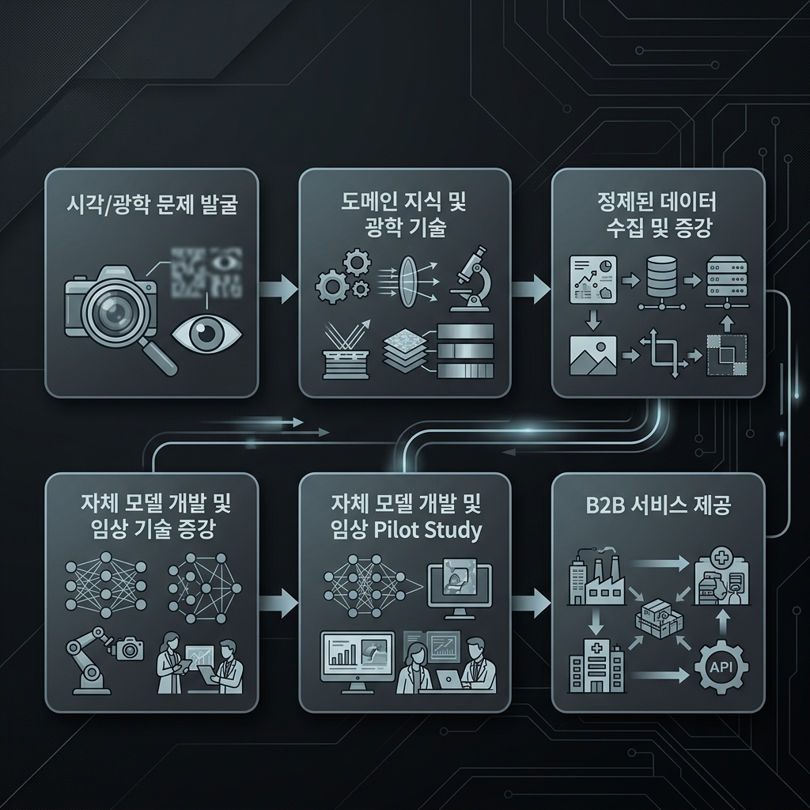

제공 서비스
시각 과학 발전 및 시제품 검증을 위해 공동 R&D 기획 및 기술 실증에 함께하세요.
🔬 임상 연구 및 시제품 실증 (Clinical Studies)
맞춤형 특수 콘택트렌즈 및 주변부 근시 제어 장치의 유효성을 평가하는 독립 임상 연구를 수행합니다. 체계적인 임상 설계를 바탕으로 광학 매개변수를 교정하고, 신뢰도 높은 검증 보고서를 도출합니다.
⚙️ 하드웨어 시제품 개발 및 광학 교정
카메라와 특수 광학 렌즈(Telecentric 등)를 결합한 이미징 하드웨어 시제품 설계를 지원합니다. 동공 추적 및 형상 복원에 적합하도록 자극 장치 동기화 스케줄러와 하드웨어 통합 튜닝을 제공합니다.
💻 소프트웨어 통합 및 AI API 개발
안구 각공막 3D 복원 알고리즘 및 미세 동공 반응 분석 소프트웨어를 파트너사의 의료 시스템에 API 형태로 연결합니다. PyTorch 가중치 모델 연산 및 WebSocket 데이터 스트림 파이프라인 개발을 지원합니다.
🎓 전문가 교육 세미나 및 컨설팅
비침습 생체 정보 스크리닝 및 기하 광학 계측 분야의 최신 연구 성과를 바탕으로 기업 기술 워크숍 및 학술 세미나를 기획합니다. 원천 특허 확보를 위한 도메인 지식 전수 컨설팅을 수행합니다.
B2B 연구개발(R&D) 파이프라인 아키텍처
우리는 초고속 광학 엣지 하드웨어, 로컬 전처리 노드, 고성능 GPU 기반의 학습 서버(optinex-station), 그리고 규격을 준수하는 SaaS 솔루션 서비스 제공에 이르기까지 완벽하게 통합된 전주기 파이프라인을 지원합니다.
Optinex Research_연구개발_파이프라인
├── Hardware_Stack (엣지 센싱 장비)
│ ├── Cameras (고속 영상 캡처 카메라군)
│ │ ├── acA 1300-60gm NIR (적외선 흑백 카메라)
│ │ ├── acA 1300-60gc (컬러 카메라)
│ │ ├── a2A 1920-160um BAS (고해상도 카메라)
│ │ ├── Flir BFS-U3-13Y3M-C (편광 광학 카메라)
│ │ └── 소형 카메라 모듈 (라즈베리 파이 및 Jetson Orin 개발자 키트용)
│ ├── Lenses (초점 거리별 광학 렌즈)
│ │ └── 8mm, 12mm, 16mm, 24mm, telecentric 기하 광학 렌즈
│ └── Controllers (광원 및 부저 자극 장치)
│ ├── LED 및 버저 동기화 스케줄러 (LED & Buzzer Scheduler)
│ └── 적외선 검사 광원 (Infrared Light Source)
├── Edge_Computing_Node (엣지 단 전처리)
│ ├── SBC Testbeds (현장 실시간 연산 및 실증 장비)
│ │ ├── J4012 개발자 보드
│ │ ├── Jetson Orin Nano Super
│ │ └── Raspberry Pi 5 + hailo 8
│ └── Ingestion (클라우드 전송 데이터 허브)
│ └── RPi 5 + WD 1TB 스토리지 및 USB LAN 포트 조합 (1Gbps 유선 전송)
├── Cloud_AI_Station (연구소 핵심 AI 워크스테이션)
│ ├── 워크스테이션 사양 (optinex-station)
│ │ ├── AMD Ryzen 9 7950X CPU
│ │ ├── Palit GeForce RTX 5070 Ti D7 16GB
│ │ └── G.Skill DDR5-6000 CL30 Flare X5 64GB RAM
│ └── Vector Database 구축(RAG 지식 검색 데이터베이스)
│ └── ChromaDB 벡터 스토어 (매일 09:00 - 22:00 논문/특허 자동 수집 및 인덱싱)
├── Self_Evolving_Agent (소프트웨어 자율성장 R&D 루프)
│ ├── PyTorch 폐루프 기계학습 노드 (임상 피드백 반영 모델 가중치 자동 갱신)
│ └── Telegram Admin Gateway (자율 R&D 성과 보고 및 소장 결재 승인 통로)
└── B2B_Medical_Service_Delivery (상용 제품화 모델)
├── HIPAA 보안 표준 암호화 저장소 (안전한 임상 데이터 격리 보존)
└── Clinician Web Portal (실시간 3D 각공막 분석 및 동공 진단 웹 대시보드)
문제 발굴부터 최종 제품 상용화까지의 단계
B2B 파트너십을 맺은 기업들은 본 연구소의 파이프라인 인프라를 활용하여 아래와 같은 체계적인 실증개발 및 제품화 단계를 거치게 됩니다.
1. 광학 문제 발굴 및 정의 🎯
주변부 망막 탈초점 제어 렌즈, 각공막 형상 피팅, 동공 자율신경 지표 등 임상 및 시장에서 요구되는 미해결 문제들을 정교하게 발굴하고 공동 R&D 로드맵을 정의합니다.
2. 광학 도메인 지식 및 기술 매핑 🔬
연구소의 광학 도메인 지식을 토대로 8mm에서 24mm 렌즈 광학계를 설계하고, LED & 버저 스케줄러 및 적외선 광원을 환자 자극 디바이스에 통합 설정합니다.
3. 고정밀 안구 데이터 수집 및 증강 📸
Basler 및 FLIR 카메라 시스템을 통해 환자의 안구 비디오 프레임을 120fps ROI 초고속 캡처합니다. 수집된 데이터를 RPi5 및 JetsonOrin 등 SBC 기반 엣지 단에서 로컬 전처리한 후 클라우드로 실시간 전송합니다.
4. 인공지능 모델 개발 및 임상 Pilot Study 🧠
optinex-station의 RTX 5070 Ti 인프라를 활용해 3D 각공막 메쉬 복원 및 동공 수축 샘플 엔트로피 분석 AI 모델을 학습시킵니다. 이후, 통제된 IRB 파라미터 하에 소규모 임상 파일럿 실증 연구를 수행합니다.
5. 상용 B2B 의료 서비스 배포 및 상용화 🏥
검증된 AI 엔진을 HIPAA 규격의 보안 DB 클라우드에 탑재하고, 최종 사용자인 안과의사 및 렌즈 피팅 전문가가 직관적으로 진단할 수 있도록 임상의용 대시보드 웹 포털 형태로 상용 제품화를 완료합니다.
